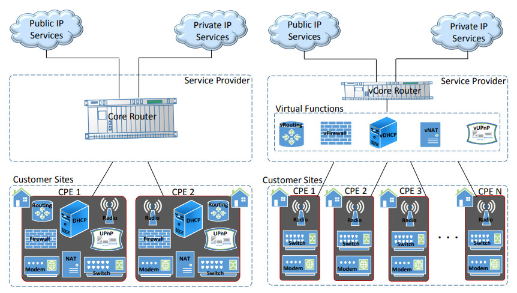

Equipamentos do Local do Cliente (CPE):
Um dos casos de uso mais diretos de NFV seria a mudança da forma como o serviço é oferecido no local do cliente, assim como os equipamentos que ele deve utilizar.
Normalmente, cada serviço oferecido por uma operadora requer um dispositivo proprietário para sua função correspondente. Isso leva a redução de espaço para instalação de mais serviços, aumento do tempo de atualização ou manutenção de serviços já existentes, e até a possibilidade que alguns clientes não possam receber atualizações, pela possibilidade de inutilizar os projetos que o cliente possa ter. Com NFV, algumas das funções de rede podem ser virtualizadas em infraestruturas gerenciadas pela operadora que oferece o serviço, liberando espaço para mais instalações de serviços. Reduz-se o tempo para implementar atualizações para os clientes e realizar manutenções dos serviços , enquanto os serviços continuam rodando, por causa da flexibilidade da rede.